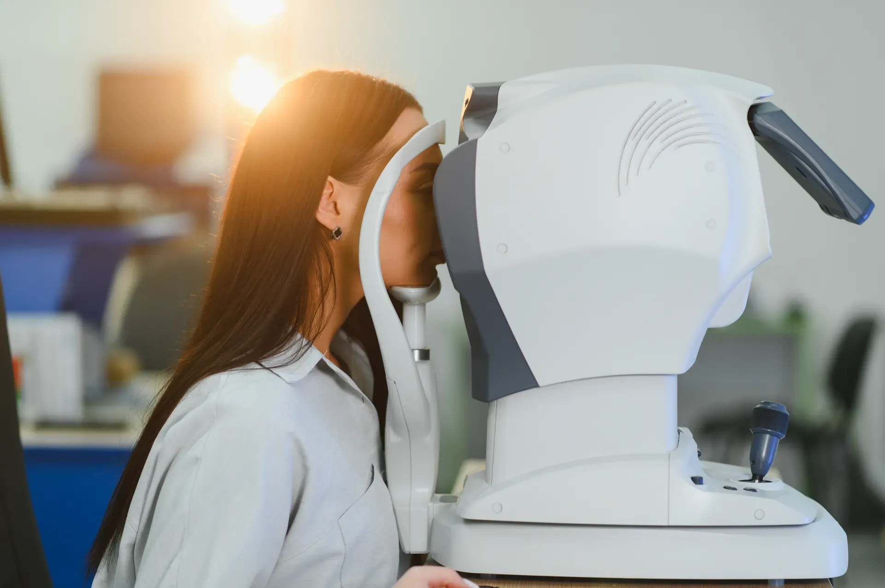
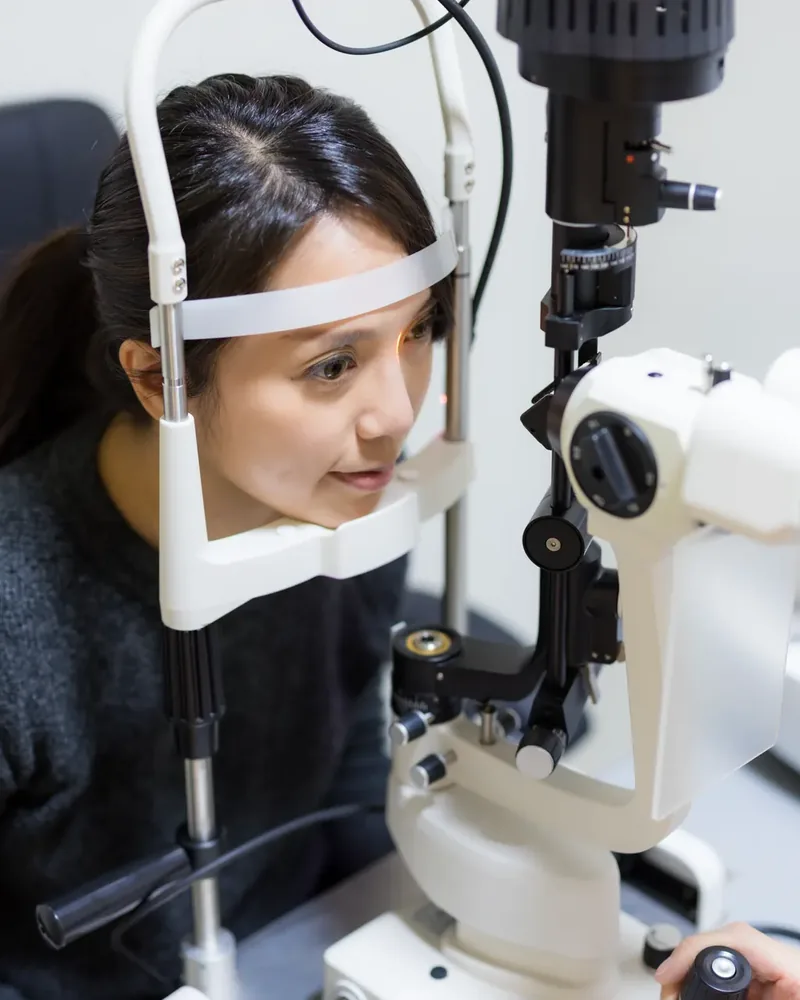
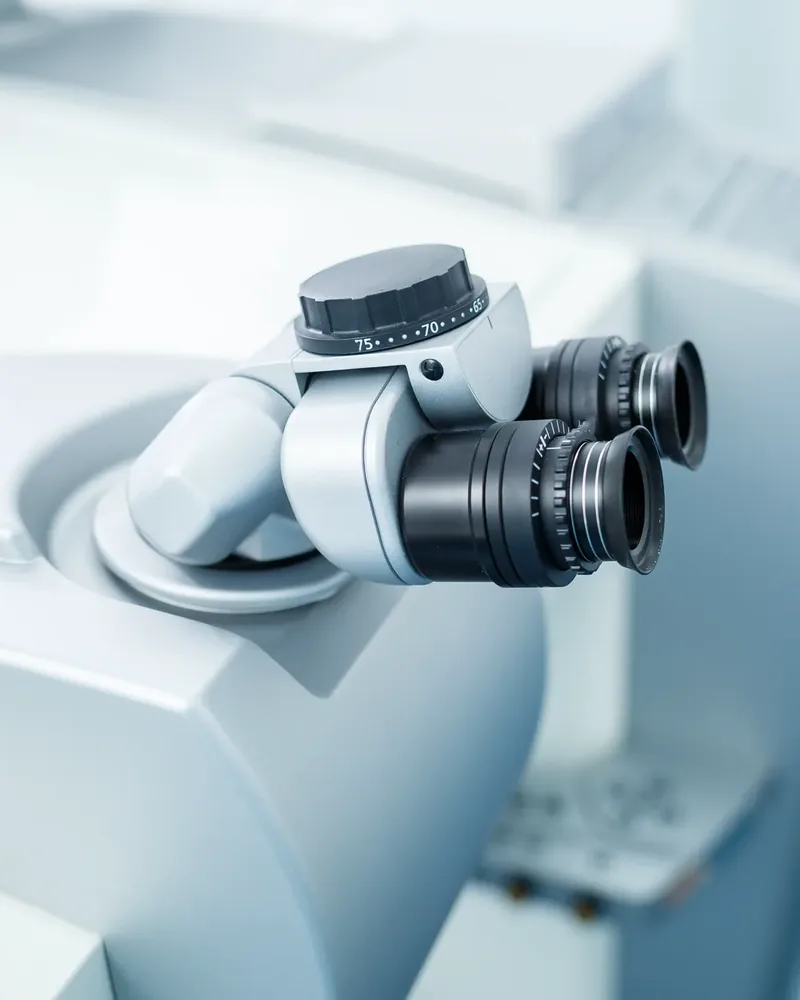
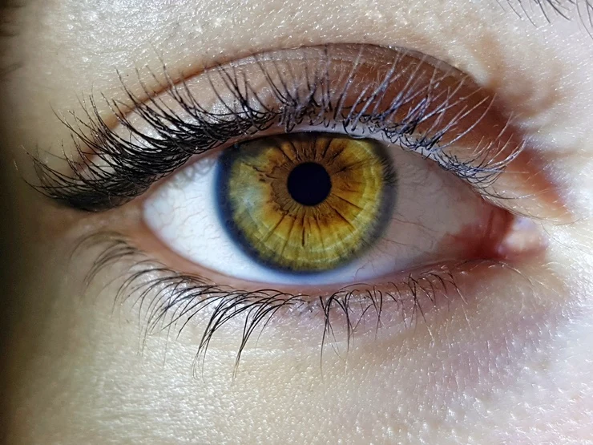
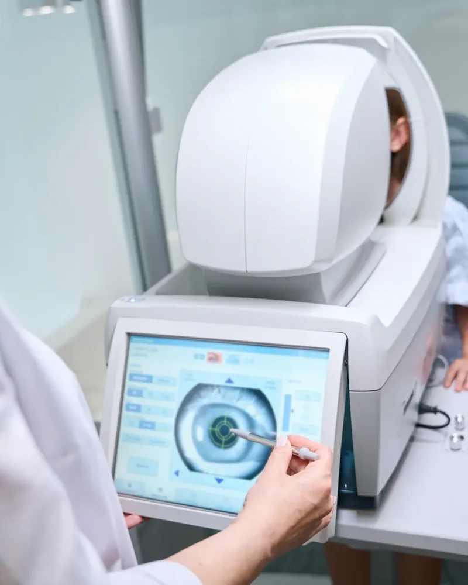
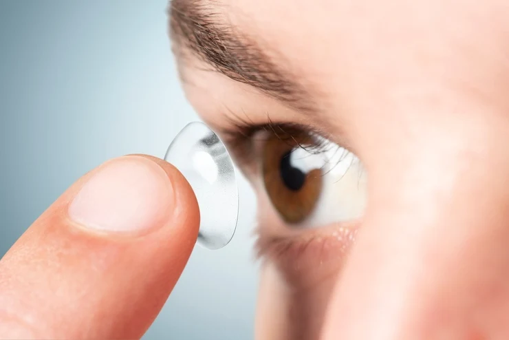
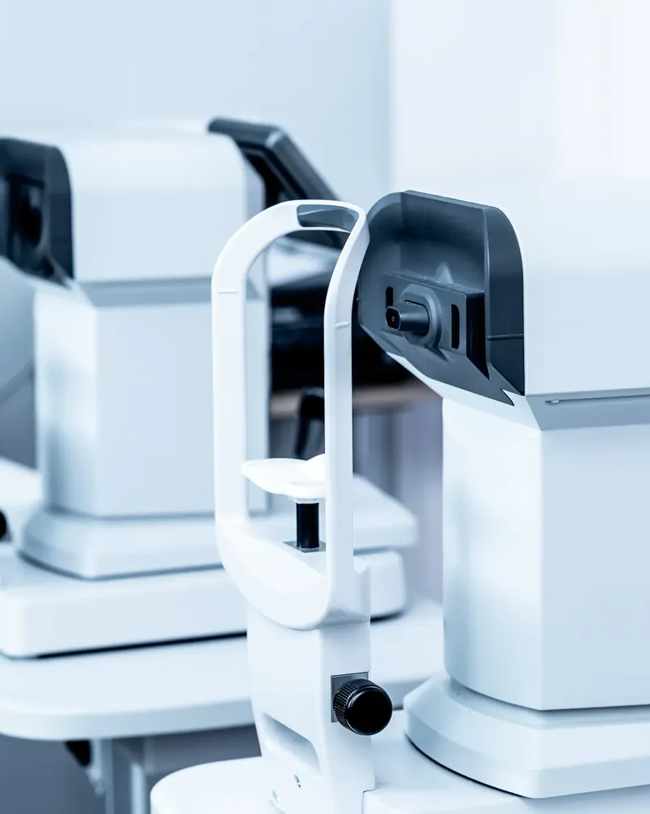
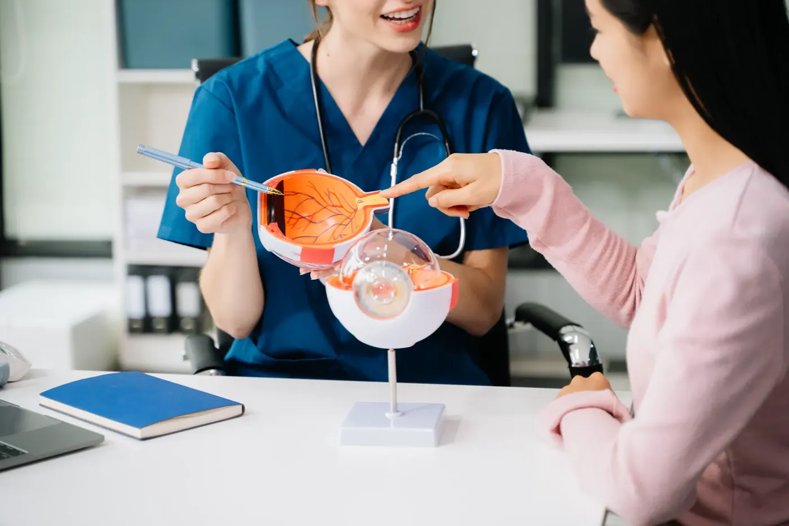

Catarata
Lente intraocular premium, alta no mesmo dia e acompanhamento por 90 dias.

Oftalmologia · Florianópolis
Da primeira consulta do seu filho à cirurgia de catarata dos seus pais: uma clínica inteira dedicada aos seus olhos, com diagnóstico de ponta e tempo de conversa.
Simulador
Arraste e veja a tabela de letras como alguém com até 3 graus de miopia sem óculos. Se você já enxerga assim, está na hora de um exame.
Agendar meu exameSimulação ilustrativa. Não substitui exame oftalmológico.
Especialidades
Passe o cursor: a foto desfoca e só a lente fica nítida.
Lente intraocular premium, alta no mesmo dia e acompanhamento por 90 dias.

02Diagnóstico precoce com OCT e campo visual. Colírio, laser ou cirurgia quando precisa.

03PRK e LASIK para miopia, hipermetropia e astigmatismo, depois de um mapa completo da córnea.

04Retinopatia diabética, degeneração macular e injeções intravítreas em sala dedicada.

05Teste do olhinho, estrabismo e o primeiro óculos, num consultório pensado para crianças.

06Adaptação de lentes gelatinosas, rígidas e esclerais, com treino de colocação.
Tecnologia
Refrator, tomógrafo e topógrafo na mesma sala. Você sai com o diagnóstico na hora, não numa próxima consulta.

Exames na mesma visita
Corpo clínico
Catarata e cirurgia refrativa
Agendar com a Dra. AnaGlaucoma
Agendar com o Dr. BrunoRetina e vítreo
Agendar com a Dra. LuísaOftalmopediatria e estrabismo
Agendar com o Dr. Pedro
Consulta
Exame completo em cerca de 1 hora, com dilatação quando indicada. Traga seus óculos atuais e a lista de medicamentos.